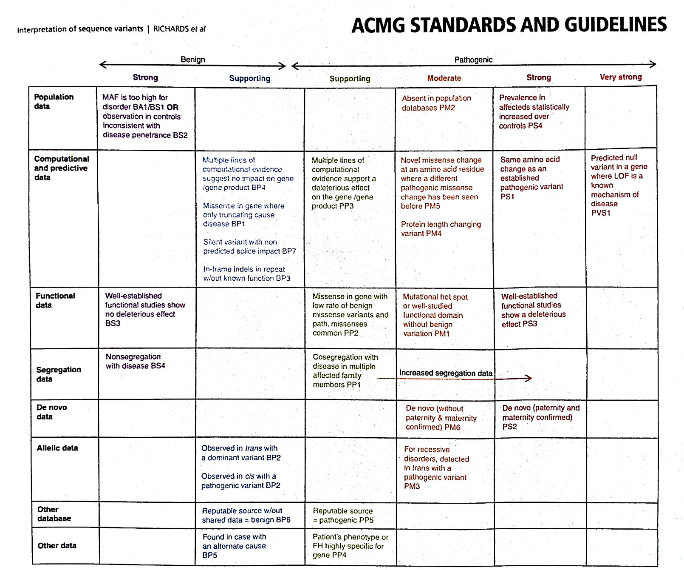

ACMG STANDARTS AND GUIDELINES
Rules for combining criteria to classify sequence variants
Pathogenic
- 1 very strong (PVS1) AND
- ≥ 1 strong (PS1-PS4) OR
- ≥ 2 moderate (PM1-PM6) OR
- 1 moderate (PM1-PM6) and 1 Supporting (PP1-PP5) OR
- ≥ 2 supporting (PP1-PP5)
- ≥ 2 strong (PS1-PS4) OR
- 1 strong (PS1-PS4) AND;
- ≥ 3 moderate (PM1-PM6) OR
- 2 moderate (PM1-PM6) AND ≥ 2 supporting (PP1-PP5) OR
- 1 moderate (PM1-PM6) AND ≥ 4 supporting (PP1-PP5)
Likely Pathogenic
- 1 Very strong (PVS1) AND 1 moderate (PM1-PM6) OR
- 1 Strong (PS1-PS4) AND 1-2 moderate
(PM1-PM6) OR
- 1 Strong (PS1-PS4) AND ≥2 supporting
(PP1-PP5) OR
- ≥3 Moderate (PM1-PM6) OR
- 2 Moderate (PM1-PM6) AND ≥2 supporting (PP1-PP5) OR
- 1 Moderate (PM1-PM6) AND ≥4 supporting
(PP1-PP5)
Benign
- 1 Stand-alone (BA1) OR
- ≥2 Strong (BS1-BS4)
Likely Benign
- 1 Strong (BS1-BS4) and 1 supporting (BP1-BP7) OR
- ≥2 Supporting (BP1-BP7)
Uncertain Significance
- Other criteria shown above are not met OR
- The criteria for benign and pathogenic are
contradictory
Interpretation of Sequence Variants
